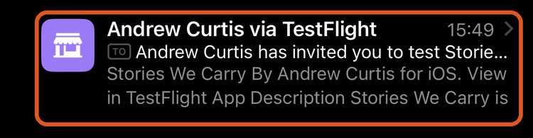
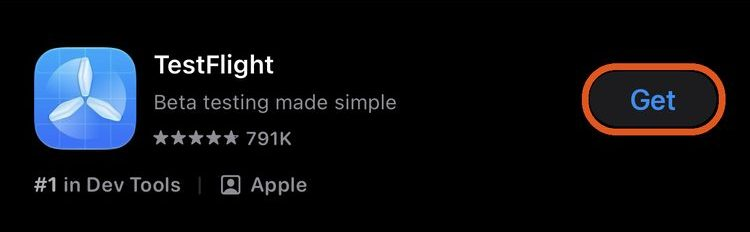
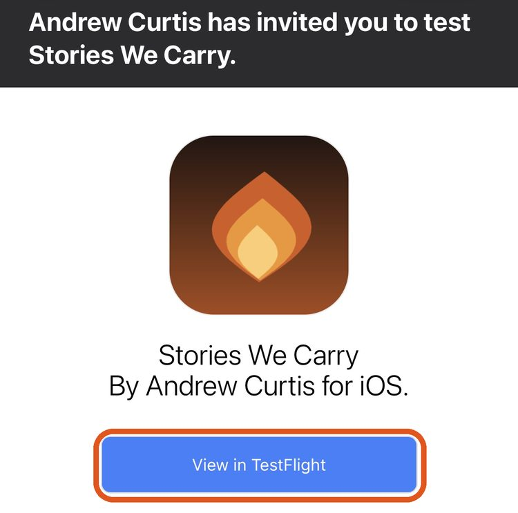
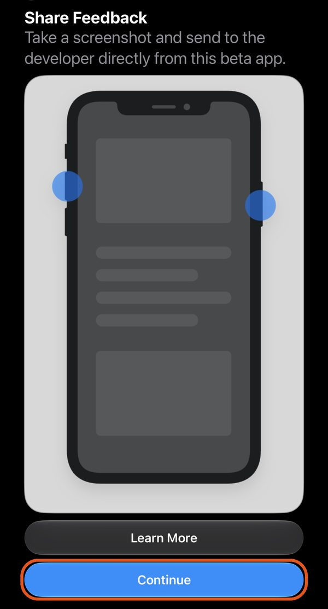
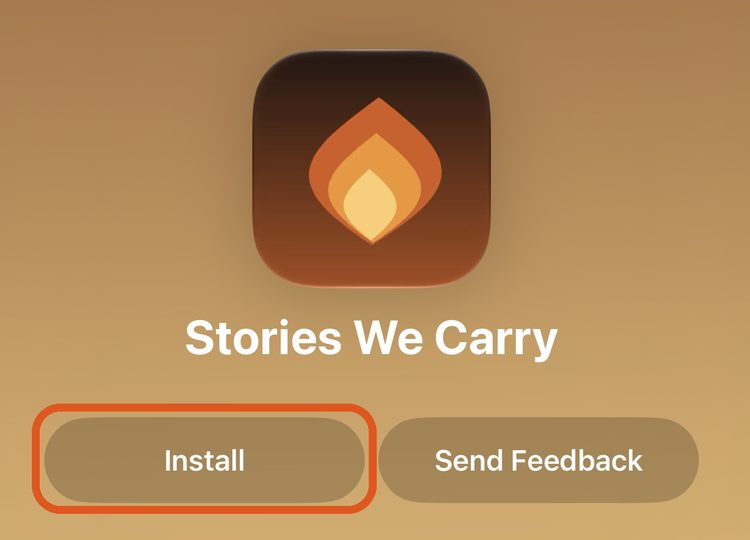
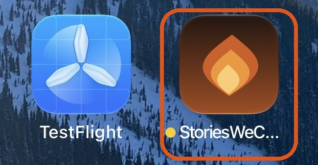

Getting Started with Stories We Carry
Thank you for trying this out. It means a lot.
First, you need an invitation
Stories We Carry is in a small private test. You can install it only after we invite you. The invitation is an email from Apple's TestFlight that names Stories We Carry.
No invitation yet? Please don't download TestFlight yet. Write to us first, and we'll set you up and send your invitation:
Already have the TestFlight email? Good. The steps below are for you.
Stories We Carry is an app that interviews you about your life. It asks a question out loud, you answer out loud, and it follows up the way a good listener would. Over time it helps you record your stories for your family.
Many of us never tell our stories because we don't know where to begin. This app just asks one question at a time, so you can talk for a few minutes or an hour, whenever it suits you.
You'll only need to set it up once. It takes about 15 minutes. If you'd like, ask someone to sit with you the first time.
What you'll need
- An iPhone. It should also work on an iPad, but we're still testing that. If you try it on an iPad, please tell us how it goes. It doesn't work on a computer.
- English. For now, the app speaks and understands English only.
- Wi-Fi or a phone signal while you talk.
Step 1: Install and sign in
You don't have to do this part alone. Many people ask a son, daughter or grandchild to sit with them for this part, and we suggest it too. It takes about 15 minutes, and you only do it once. After that, you just open the app and talk.
You'll get two emails. Use your iPhone for both of them, not a computer.
- One from TestFlight. That's Apple. It lets you install the app.
- One from Stories We Carry, with the subject "Your Stories We Carry sign-in". It has your password.
They can arrive in either order. Wait until you have both, then start here.
Open the email from Apple. In your email on your iPhone, find the email from TestFlight. The sender's name ends in "via TestFlight", and it says you've been invited to test Stories We Carry. Open it and read it, but don't tap anything in it yet. You'll come back to it in step 5.

Open the App Store. Go to your Home Screen and tap App Store. Its icon is blue with a white letter A.
Search for TestFlight. Tap Search at the bottom of the screen. Type TestFlight, then tap search on the keyboard.

Get TestFlight. Find TestFlight, made by Apple. Its icon is blue with a white propeller. Tap Get. If you see a small cloud with an arrow instead, tap that.
Your iPhone may ask you to confirm. Double-click the side button, or use Face ID, or type your Apple Account password (the one you use for the App Store, not the Stories We Carry password).
When the button changes to Open, TestFlight is ready. You don't need to open it.
Go back to the email from Apple. Go back to your email and open the email from TestFlight again.
Tap "View in TestFlight". The button is in the email. If your text is large, you may need to scroll down to find it. TestFlight opens.

If TestFlight asks you something first, either answer is fine. The first time it opens, TestFlight may show a screen or two first ("What to Test", "Share Feedback"). Tap Continue on each. If it asks to send you notifications, tap either Allow or Don't Allow.

Tap "Accept". You'll see Stories We Carry with a button that says Accept. Tap it.
Tap "Install". The button changes to Install. Tap it and wait a minute while the app downloads. If you see Install right away, without Accept, just tap Install.

Copy your password. Before you open the app, open the Stories We Carry email (subject "Your Stories We Carry sign-in"). Your password is on a line by itself. Press and hold the password, then tap Copy.
Would you rather type it? That works too. Keep the email open where you can see it, or write the password down.
Open Stories We Carry. Go back to TestFlight and tap Open. You can also find Stories We Carry on your Home Screen. Its name may be shortened, like "StoriesWeC…". A small orange dot beside the name means it's a test version. That's normal.

Type your email. The app says Sign in to continue. Tap the Email box and type your email address. Use the same address both emails came to.
Paste or type your password. Tap the Password box. To paste, tap the box again and tap Paste. Or type it. The password is long, and capital letters matter.
Tap "Sign In". You only sign in once. The app remembers you after that.
You're in. Next, the app reads two short notes aloud. Go on to Step 2.
If something doesn't look right
- I didn't get an email from Apple.
- It can take a few minutes. Look in your Junk or Spam folder, and search your email for "TestFlight". If you use more than one email address, check the other one too. Still nothing? Reply to the Stories We Carry email, or write to us: support@storieswecarry.app We'll send the invitation again.
- I searched the App Store for Stories We Carry and it isn't there.
- That's expected. Stories We Carry isn't in the App Store yet. TestFlight is Apple's free app for trying apps before they're in the App Store. You get TestFlight from the App Store (steps 2 to 4), and Stories We Carry comes to you through TestFlight (steps 5 to 9).
- It says the app isn't compatible, or there's no Install button.
- Stories We Carry needs an iPhone with iOS 17 or later. To check yours, open Settings, tap General, then tap About, and look at the iOS Version line. To update, open Settings, tap General, then tap Software Update.
- It's asking for a password.
- There are two different passwords. If the App Store or TestFlight asks, it wants your Apple Account password, the one you use to get apps. If Stories We Carry asks, use the password from the Stories We Carry email. If the app says it couldn't sign you in, try typing the password instead of pasting it. Still stuck? Reply to that email and we'll call and read it to you.
Step 2: Two short questions
Before the first interview, the app reads two short notes out loud. To hear one again, tap Read this aloud again.
- "Before we begin." It explains that an AI holds the conversation, and that your stories are never used to train AI. Tap I understand, let's begin.
- Keeping your voice. It asks if it may keep recordings of your answers, so your family can one day hear your stories in your own voice. Tap Yes, keep my voice or No, just the words. Either way, everything else works the same.
Step 3: Your first conversation
Before you start: find a quiet spot and turn the volume up. Hold the phone in front of you, or set it on a table close by. Don't hold it to your ear. The questions play from the phone's speaker, not the earpiece.
No settings to change. The app keeps your screen on while you're talking and while a question plays, so it won't go dark in the middle of a story. If you changed Auto-Lock for an earlier version, you can set it back to what you like. If your screen still goes dark while you're talking, you have an older version: update it in TestFlight (see Updates below).
- Listen to the question. The first thing it asks about is your name: it checks that it has it right, and asks what you like to be called.
- When the question is finished, tap the big Tap to Answer button and start talking. Take as long as you like.
- The very first time, your iPhone asks if Stories We Carry may use the microphone. Tap Allow. (If you tapped Don't Allow by mistake: open the iPhone's Settings app, find Stories We Carry (on newer iPhones it's under Apps), and turn Microphone on.)
- When you've finished, tap Done Talking. The app takes a moment to think, then asks the next question.
Now and then it pauses to ask if you'd like to go on. Tap Keep Going for another question, or Stop For Now.
For the helper: before you hand the phone back
If the person you're helping has trouble seeing the screen, take ten more minutes. These steps let them open Stories We Carry without having to find it. Many people won't say they can't find an app, so don't wait to be asked.
- Turn on Siri. Open Settings and tap Siri (on some iPhones it's Apple Intelligence & Siri). Turn on Press Side Button for Siri; you may find it under Talk to Siri or Requests. If they'd like to talk to Siri without pressing anything, also choose "Siri" or "Hey Siri" there.
- Practice once together. Have them press and hold the side button (or say "Hey Siri"), then say "Open Stories We Carry." Repeat until it works for them.
- Set up Back Tap (optional). Two taps on the back of the phone will open the app. Open the Shortcuts app and tap +. Add the action Open App, choose Stories We Carry, and name the shortcut "Stories". Then open Settings, tap Accessibility, tap Touch, then tap Back Tap. Tap Double Tap and choose Stories. Have them try two firm taps near the camera on the back of the phone.
- Put the app where a finger can find it. Touch and hold the Stories We Carry icon until the icons jiggle, then drag it into the row along the bottom of the screen, on the left. Fewer apps in that row makes it easier to find. To make every icon bigger: touch and hold an empty spot on the Home Screen, tap Edit, tap Customize, then tap Large. App names are hidden at that size.
- Turn the volume up.
- Last: ask them to open the app on their own. Hand the phone back and watch, without helping. When they hear the first question, you're done. If they can't open it, go back to step 2.
Stopping, and getting a written copy
- Stop whenever you like. Tap Stop For Now. It's under the Tap to Answer button. Or tap Tap to Answer and just say "I'd like to stop."
- Get a written copy. After you stop, tap Email Me This Conversation. The first time, it asks you to confirm; tap Yes, send it to me. The copy goes to the email address you sign in with. The words come from speech recognition, so a few may be misheard.
Next time
Come back whenever you'd like. There's no schedule to keep. It remembers what you've told it and picks up where you left off.
If you open it later and it still says "Thanks for sharing today", give it a moment. When you've been away for a while (about 15 minutes or more), it gets ready and asks you a new question on its own.
What to expect
- It's a conversation, not a form. Talk however you normally would. There's no wrong way to answer.
- If it gets a name wrong, just tell it. Spell the name out loud ("that's Jon, J-O-N") and it will remember the right spelling.
- It's fine to pause, or say "I don't remember." It won't push. Memory doesn't work on command, and that's okay.
- You can go back to anything. If more comes to mind later, just bring it up in another conversation.
- If it says it didn't hear your answer, just answer again. If your screen went dark while you were talking, update the app in TestFlight (see Updates below).
- You need Wi-Fi or a phone signal. If it can't connect, it says so. Tap Try Again.
Updates
From time to time we'll send a new version. TestFlight will let you know. To get it, open the TestFlight app and tap Update next to Stories We Carry. Your stories stay safe through updates.
Tell us what's not working
If something breaks, looks wrong, or confuses you, we want to hear about it. Any of these is fine:
- Email us at feedback@storieswecarry.app and tell us what happened, in your own words.
- Or use TestFlight: open the TestFlight app, tap Stories We Carry, then tap Send Feedback. This sends us technical details that help us fix things faster.
Tell us how it felt
After about a week, we'll email you a short survey about the experience itself: whether the pace felt right, whether it asked good questions, and whether you'd want to keep doing it. That's just as valuable to us as bug reports, so please don't skip it.
Your privacy
Your stories are private to your account. Read exactly what we collect and why in our privacy policy.
Questions?
Write to us any time at support@storieswecarry.app.